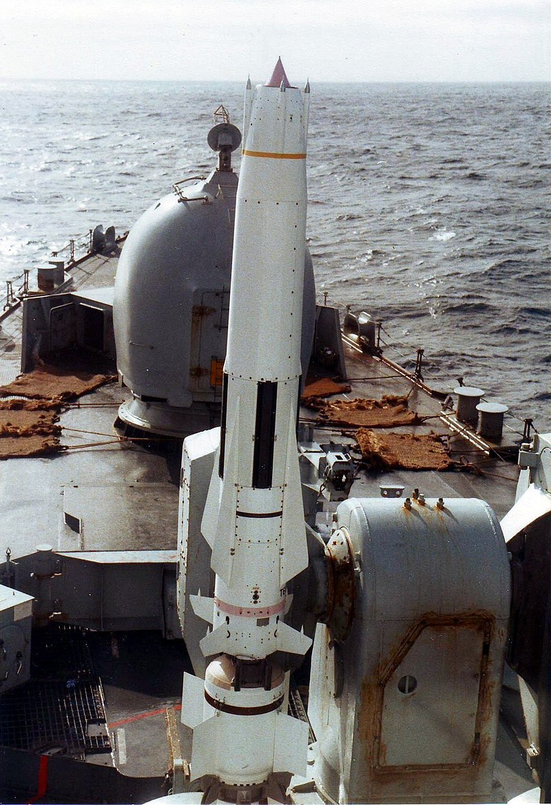
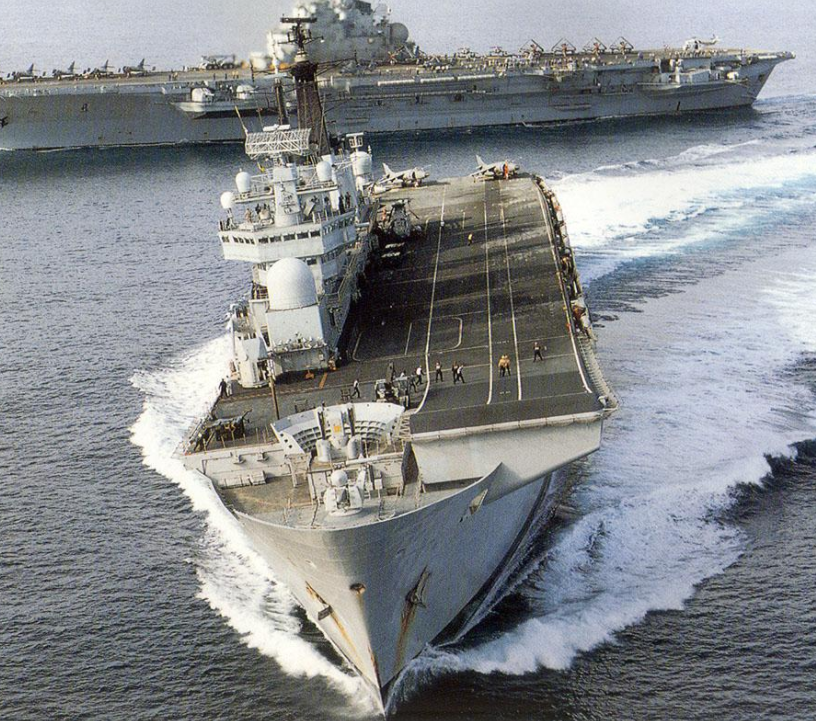
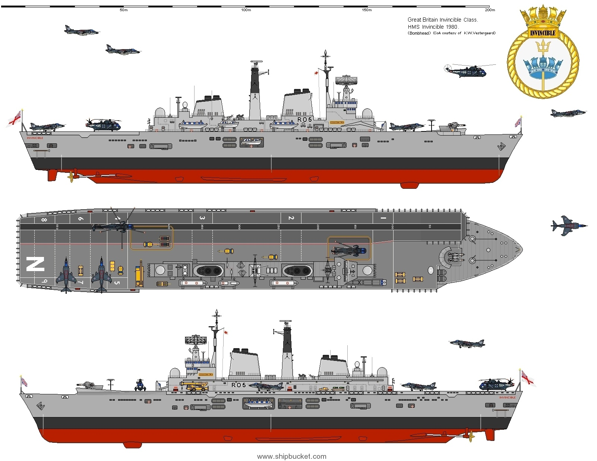
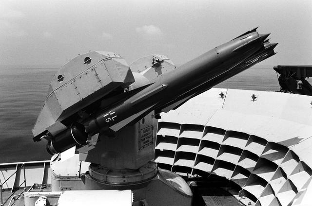
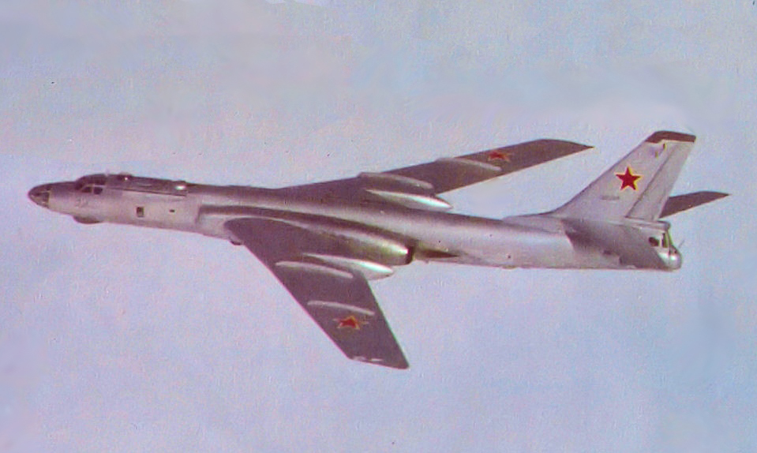
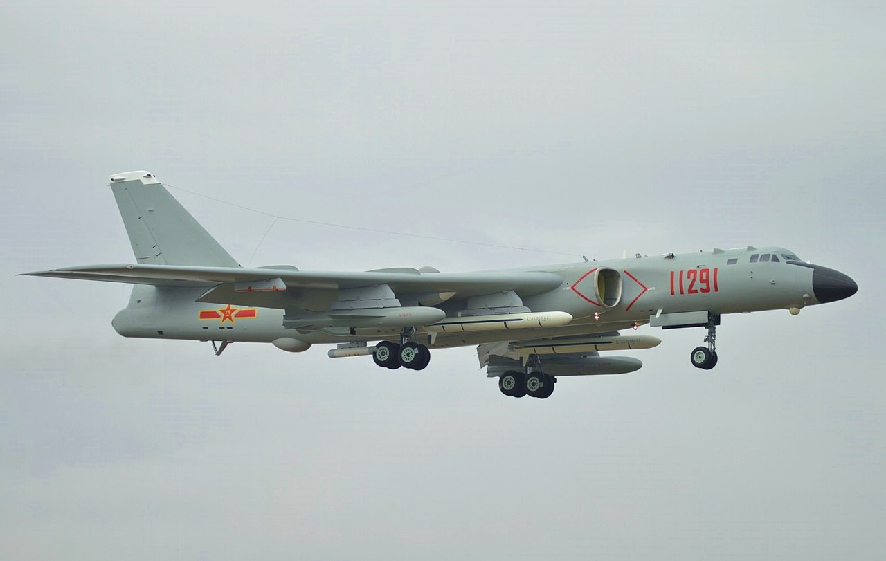
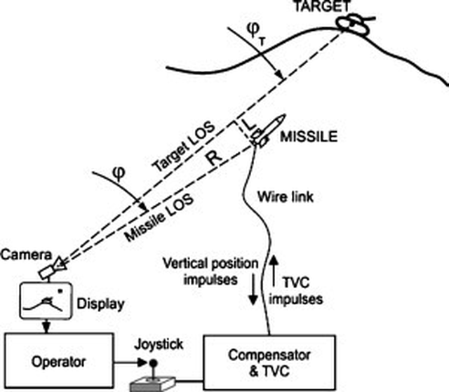
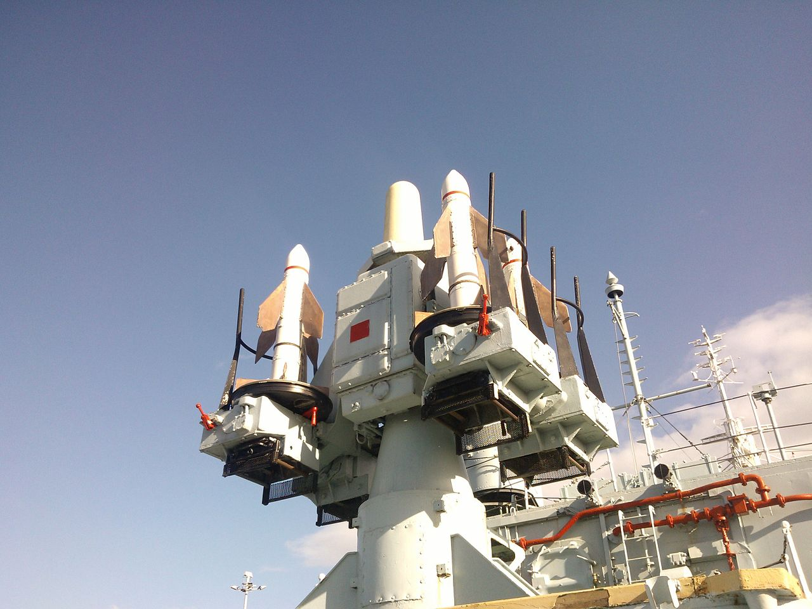
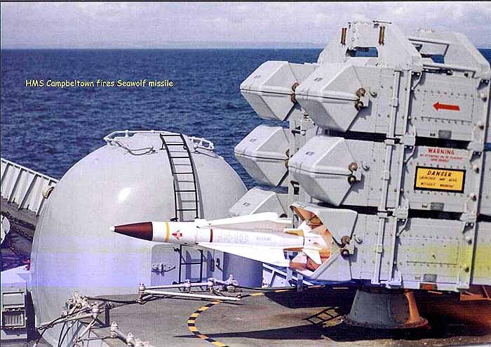

포클랜드 전쟁 잡담 - 영국제 동호회원들간의 전쟁
게시: 2022-03-17T06:30:55+09:00
<어? 님도 그 브랜드 미쓸 쓰세요?> 포클랜드 전쟁에서 영국 해군의 주력 대공무기는 Sea Dart 미쓸. 고고도 장거리 미사일이었던 씨다트는 2단 로켓 추진 방식으로서, 먼저 1단 고체 연료 로켓으로 추진되어 초기 속도를 낸 뒤에, 1단 로켓을 분리한뒤 점화되는 2단 로켓은 ramjet 방식으로 추진하여 마하 2.5의 높은 속도를 냄. 최대사거리는 75km 정도였고 이걸 테스트해본 영국 해군은 "이걸 장착한 구축함은 F-4 Phantom 전투기 8대가 초계비행을 하는 것과 동일한 방공 효과를 낸다"며 자화자찬. 그야말로 일기당팔(一騎當八).

(Sea Dart 미쓸의 앞부분에 제트기의 공기 흡입구 같은 것이 보이는 이유가 다 있음. 실제로 공기를 빨아들여 연소시키는 램젯 방식임) 그러나 서류상으로는 분명히 우월한 성능에도 불구하고 영국제 따위 아무도 사지 않았고, 전세계 해군은 더 느리고 사거리도 더 짧은 미제 RIM-24 Tartar 대공 미쓸을 구매. 결국 로열 네이비는 이 우수한 대공 미쓸의 유일한 사용자가 됨. 근데 나중에 아르헨티나가 씨다트를 장착한 Type 42 구축함 2척을 사가면서 영국 외에 유일한 씨다트 사용자가 되었고, 하필 그 아르헨티나와 1982년 포클랜드 전쟁을 치르게 됨. 포클랜드 전쟁은 영국 해군에게는 씨다트 미쓸의 우수성을 입증할 절호의 찬스. 이 전쟁 기간 중 총 26발의 씨다트 미쓸이 발사되었는데 (구축함에서 20발, 항모 HMS Invincible에서 6발), 그 중 오인 사격으로 격추한 아군 헬기 포함 7발만 명중됨. 다만 이건 씨다트가 광활한 대양에서 맞닥뜨릴 고공/장거리 목표물에 최적화된 대공 미쓸인데도, 좁은 포클랜드 섬 인근 해역에서 낮게 날아오는 아르헨티나 공군기들과 대적했기 때문. 실제로 항모 HMS Invincible에서 쏜 6발을 포함하여 많은 수가 저공으로 침투하는 적기들에게 겁을 주어 폭격을 방해하기 위해 마구잡이로 발사되었음. 제대로 된 타겟인 고공 목표물에 대해 발사된 것은 5발이었는데 그 중 4발이 명중하여 80%의 명중률을 자랑. 하지만 그런 고공 목표물은 2대의 Skyhawk 공격기를 제외하고는 느린 구형 Canberra 폭격기 및 민수용 공군기인 Learjet이었고, 덤으로 아군 헬기까지 적 수송기로 오인하여 격추시킴.

(포클랜드 전쟁 당시의 HMS Invincible. 우리가 흔히 아는 모습과는 달리 이물에 비행갑판 대신 고대 그리스 반원형 극장 같은 공간이 있고 거기에 씨다트 미쓸을 장착)

(나중에 별로 쓸모도 없는 Sea Dart 대신 차라리 함재기 Sea Harrier들을 더 싣는 것이 더 좋겠다고 결론을 내리고 씨다트를 떼내고 그 자리에 비행 갑판을 연장)

(HMS Invincible의 이물에 장착된 Sea Dart 미쓸)
씨다트는 목표물에 근접할 때까지 함정이 레이더로 조준을 유지해야 하는 semi-active radar 방식이었는데, 그래서 함정에 탑재된 조준용 레이더의 성능만 받쳐준다면 저고도로 침투하는 목표물에도 대응할 수는 있었음. 실제로 대부분의 함정이 탑재하고 있던 Type 965 대신 최신형 Type 1022 레이더를 탑재하고 있던 HMS Exeter는 이론상 교전 가능 최저 고도 30m 이하로 날아오는 아르헨티나 스카이호크 2대를 10~15m 고도에서 격추시킴. 결국 씨다트는 열악한 환경에서도 나름 선방을 했는데, 가장 큰 공헌은 아르헨티나 공군에게 겁을 주어 아예 고공으로는 침투하지 못하게 했다는 것. 똑같은 씨다트 미쓸을 장착한 Type 42 구축함을 가지고 있던 아르헨티나는 씨다트에 대해 꽤 높은 평가를 하고 있었고, 그래서 씨다트를 피하기 위해 초저공 침투로만 접근. 그로 인해 많은 폭탄들이 너무 저공에서 투하되어 충분한 뇌관 격발 장치 장착 시간을 갖지 못해 불발탄이 되었고, 덕분에 많은 영국 군함들이 폭격에서 살아남음. <부적절한 장비, 부적절한 장소> 영국군이 상륙장소로 산 카를로스 만을 고른 중요 이유 중 하나는 곶으로 가려진 좁고 얕은 해역이라서 영국 해군이 두려워하던 공중 발사 엑조세 미사일과 아르헨티나 잠수함을 피할 수 있다는 장점 때문. 그러나 그런 해역에서 활약하기에 영국 해군 함정들도 최적화된 상태는 아니었음. 당시 영국 해군의 주임무는 북해와 대서양에서 소련의 잠수함을 사냥하는 것. 그리고 그런 영국 해군을 노리는 가장 큰 위협은 소련의 장거리 폭격기 Tu-95 Bear 또는 Tu-16 Badger. 따라서 당시 영국 해군의 최신예 주력인 Type 42 구축함들은 장거리 대공 미쓸인 Sea Dart를 갖추고 있었을 뿐, 4.5인치 Mark8 주포 1문 외에 대공포는 Oerlikon 20mm 기관포를 딱 2문 갖추고 있었음. 씨다트는 저공에서 날아오거나 매우 근접한 목표물에 대해서는, 특히 인근에 육지가 존재할 경우엔 명중률이 젬병인 물건.

(소련 Tu-16 Badger 폭격기. 소련에서는 1962년에 생산이 중단되었고 지금은 모두 퇴역.)

(중국에서는 Tu-16을 H-6라는 이름으로 라이센스 생산되어 지금도 주력 폭격기로 사용 중. 물론 낡고 느린 폭격기이지만 무거운 장거리 크루즈 미쓸을 싣고 먼거리를 날아갈 수 있으므로, 나름 위협적.) 영국 해군도 씨다트 미쓸의 한계를 잘 알고 있었기 때문에 그걸 보완하고자 단거리 대공 미쓸인 Sea Wolf를 장착하고는 있었으나, 당시 씨울프는 3년 전에야 최초로 도입되기 시작한 무기라서 아직 이런저런 기술적 문제도 많았고 무엇보다 프리깃함 3척에만 장착되어 있었음. 구형 단거리 대공 미쓸인 Sea Cat을 달고 있는 함정들도 몇 척 있었으나 이건 도저히 쓸 물건이 아니었음. 씨캣은 마하 0.8에 불과한 속도도 문제였지만, 유도 방식이 무전에 의한 command line-of-sight (CLOS) 방식. 즉, 발사되고 나면, 함정에서 미쓸 조작병이 적 항공기와 발사된 씨캣 미쓸을 눈으로 보고 무전으로 깔짝깔짝 움직여서 명중시키는 방식. 수상함이나 탱크라면 모를까 제트기를 이런 식으로 명중시킨다는 것은 누가 봐도 불가능.

(Sea Cat에서 채용한 수동식 Command Line-of-sight라는 것은 목표물 뿐만 아니라 날아가는 Sea Cat 미쓸까지 눈으로 보아야 하는 방식)

(Sea Cat 대공 미쓸. 생긴 것부터 장난감.)

(Sea Wolf 대공 미쓸. 이건 마하3의 속도에 Automatic Command to Line-Of-Sight (ACLOS), 즉 레이더로 자동 조준되는 방식. 그러나 포클랜드 전쟁 때는 영국제답게 꼭 필요한 순간에 고장을 일으켰음.) 차라리 2차세계대전 때처럼 40mm Bofors 대공포를 달고 있었다면 훨씬 더 도움이 되었겠지만, 보포르 대공포는 모두 Sea Cat으로 교체된 상태. 그 상태로 영국 함대는 용감하게 좁은 산 카를로스 만으로 들어갔고, 거기서 아르헨티나 공군기들과 맞닥뜨림.